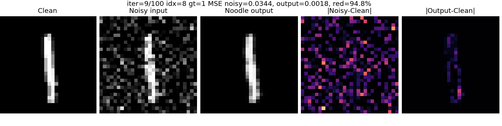
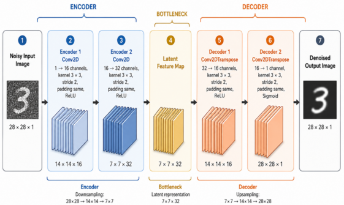

Image Denoising with Noodle

1. Goal
In this exercise, we deploy a small convolutional autoencoder on a microcontroller using Noodle. The system receives a noisy 28 × 28 grayscale image from a Python program, performs denoising inference on the microcontroller, and sends the reconstructed image back to the computer.
The complete workflow is:
- Train an autoencoder in Python/Keras.
- Export the trained weights into Noodle-compatible C header files.
- Compile and upload the Arduino/ESP32 firmware.
- Send a noisy image over serial.
- Receive and visualize the denoised output.
2. Model Used in This Case

The example autoencoder uses this structure:
| Stage | Layer | Channels | Kernel | Stride | Padding | Activation | Output |
|---|---|---|---|---|---|---|---|
| Input | Image | 1 | - | - | - | - | 28 × 28 × 1 |
| Encoder 1 | Conv2D | 1 → 16 | 3 × 3 | 2 | same | ReLU | 14 × 14 × 16 |
| Encoder 2 | Conv2D | 16 → 32 | 3 × 3 | 2 | same | ReLU | 7 × 7 × 32 |
| Decoder 1 | Conv2DTranspose | 32 → 16 | 3 × 3 | 2 | same | ReLU | 14 × 14 × 16 |
| Decoder 2 | Conv2DTranspose | 16 → 1 | 3 × 3 | 2 | same | Sigmoid | 28 × 28 × 1 |
In the microcontroller firmware, Noodle stores tensors in CHW layout:
X : 1 × 28 × 28
Z1 : 16 × 14 × 14
Z2 : 32 × 7 × 7
Z3 : 16 × 14 × 14
Y : 1 × 28 × 28
3. Padding: SAME and VALID in Noodle
Padding controls what happens near the border of an image or feature map during convolution.
In Keras, we usually see:
padding="same"
padding="valid"
In Noodle, padding is controlled by the P field inside the ConvMem structure:
ConvMem E1;
E1.K = 3;
E1.P = 65535;
E1.S = 2;
E1.OP = 0;
For this guide, the important convention is:
P = 65535 means SAME padding
P = 0 means VALID padding
P = n means explicit padding of n pixels
3.1 VALID padding
VALID padding means no zero padding is added around the input.
The convolution kernel is only applied where it fully fits inside the input.
For normal Conv2D, the output width is:
V = floor((W - K + 2P) / S) + 1
For VALID padding:
P = 0
so:
V = floor((W - K) / S) + 1
Example:
Input width W = 28
Kernel K = 3
Stride S = 1
Padding P = 0
Output width = floor((28 - 3) / 1) + 1
= 26
So a 28 × 28 input becomes 26 × 26.
In Noodle:
conv.P = 0;
means VALID padding.
3.2 SAME padding
SAME padding means Noodle adds virtual zero padding around the input so that the output width follows the common deep-learning behavior.
For stride 1, SAME usually keeps the spatial size:
28 × 28 → 28 × 28
For stride 2, SAME reduces the size approximately by half:
28 × 28 → 14 × 14
14 × 14 → 7 × 7
This is what the image denoising autoencoder uses:
enc1: 28 × 28, stride 2, SAME → 14 × 14
enc2: 14 × 14, stride 2, SAME → 7 × 7
In Noodle, use:
conv.P = 65535;
to request SAME padding.
Why 65535?
Because P is stored as an unsigned 16-bit value. The value 65535 is used as a special marker, not as a real padding size. It tells Noodle:
compute SAME padding automatically
So this:
E1.K = 3;
E1.P = 65535;
E1.S = 2;
means:
3 × 3 convolution
SAME padding
stride 2
3.3 Explicit padding
Noodle can also use an explicit padding value.
Example:
conv.P = 1;
means one zero-padding pixel is added around the input.
For a 3 × 3 kernel with stride 1, this behaves like SAME padding:
W = 28
K = 3
S = 1
P = 1
V = floor((28 - 3 + 2×1) / 1) + 1
= 28
However, for stride 2, SAME padding is more subtle, especially when the input size is odd or when output-size rounding matters. Therefore, for Keras-style SAME behavior, we should use:
conv.P = 65535;
not manual guessing.
3.4 Padding in Conv2DTranspose
The decoder uses Conv2DTranspose:
D1.OP = 1;
D2.OP = 1;
and also uses:
D1.P = 65535;
D2.P = 65535;
For this denoising model, that means the transposed convolution should mirror the encoder shape:
dec1: 7 × 7, stride 2, SAME → 14 × 14
dec2: 14 × 14, stride 2, SAME → 28 × 28
So the full spatial flow is:
28 → 14 → 7 → 14 → 28
This is why W_final should be 28:
if (W_final != W_OUT) {
Serial.printf("ERR_BAD_W %u\n", W_final);
}
If the padding settings are wrong, the final width may not return to 28.
3.5 Padding used in this image denoising example
All four layers use SAME padding:
E1.P = 65535;
E2.P = 65535;
D1.P = 65535;
D2.P = 65535;
The intended shape sequence is:
| Layer | Operation | Padding | Input width | Output width |
|---|---|---|---|---|
E1 |
Conv2D | SAME | 28 | 14 |
E2 |
Conv2D | SAME | 14 | 7 |
D1 |
Conv2DTranspose | SAME | 7 | 14 |
D2 |
Conv2DTranspose | SAME | 14 | 28 |
The practical rule is:
Use P = 65535 when the Keras model says padding="same".
Use P = 0 when the Keras model says padding="valid".
Use P = n only when you intentionally want explicit n-pixel padding.
4. Required Files
The wXX.h and bXX.h files are generated after training and exporting the model.. Place these generated files accordingly to the embedded project folder:
generated_weights
├── w01.h
├── b01.h
├── w02.h
├── b02.h
├── w03.h
├── b03.h
├── w04.h
└── b04.h
Important note about older main.cpp examples
Here, we use NoodleBuffer API:
static NoodleBuffer A;
static NoodleBuffer B;
NoodleBuffer is a grow-only tensor buffer. It starts empty, grows when a layer needs more storage, and then reuses that memory for later layers__. The user does not need to manually compute the maximum activation size, allocate intermediate arrays, or call noodle_setup_temp_buffers() for normal memory-to-memory examples.
The important idea remains the same:
A stores the current tensor
B stores the next tensor
then A and B are swapped
So the memory movement is still visible to students, but the low-level allocation details are handled by Noodle.
5. Step 1 — Train the Autoencoder
Open Auto_Encoder.ipynb.
The training notebook should:
- Load grayscale image data, for example MNIST.
- Normalize images to the range
[0, 1]. - Add artificial noise to the clean images.
- Train the autoencoder to map:
noisy image → clean image
Example training objective:
model.fit(
x_train_noisy,
x_train_clean,
validation_data=(x_test_noisy, x_test_clean),
epochs=...,
batch_size=...
)
After training, test the model in Python first. Compare:
clean image
noisy image
denoised image from Keras
Only continue to Noodle deployment after the Keras model gives reasonable denoising results.
6. Step 2 — Export Weights for Noodle
For this autoencoder, use exporter_model(), not only model.get_weights().
This is important because Conv2D and Conv2DTranspose are both 4D tensors, but the Keras layouts are different. The layer-aware exporter correctly handles both.
Example:
from model_exporter import exporter_model
exporter_model(model, "exported_weights")
The exporter will generate files similar to:
exported_weights/
├── w01.h
├── b01.h
├── w02.h
├── b02.h
├── w03.h
├── b03.h
├── w04.h
└── b04.h
Copy these files into the Arduino/PlatformIO project folder.
7. Step 3 — Prepare the Microcontroller Project
The firmware must include:
#include "noodle.h"
#include "noodle_serial.h"
#include "w01.h"
#include "b01.h"
#include "w02.h"
#include "b02.h"
#include "w03.h"
#include "b03.h"
#include "w04.h"
#include "b04.h"
The image size is fixed to 28 × 28:
static constexpr uint16_t IMG_W = 28;
static constexpr uint16_t IMG_H = 28;
static constexpr uint16_t IMG_SIZE = IMG_W * IMG_H;
The firmware receives IMG_SIZE = 784 bytes from Python, converts the bytes to float values in [0, 1], runs Noodle inference, converts the output back to bytes, and sends the denoised image back.
8. Step 4 — Understand the Noodle Forward Pass
The autoencoder forward pass has four layers. With the newer NoodleBuffer API, we do not write the layer outputs as separate arrays named Z1, Z2, Z3, and Y. Instead, we use two buffers and swap their roles after each layer:
NoodleBuffer *in = &A;
NoodleBuffer *out = &B;
W = noodle_conv_float(in, C_IN, C1, out, W, E1, no_pool, NULL);
swap_buffers(in, out);
W = noodle_conv_float(in, C1, C2, out, W, E2, no_pool, NULL);
swap_buffers(in, out);
W = noodle_conv_transpose_float(in, C2, C3, out, W, D1, NULL);
swap_buffers(in, out);
W = noodle_conv_transpose_float(in, C3, C_OUT, out, W, D2, NULL);
swap_buffers(in, out);
noodle_sigmoid(in, IMG_SIZE);
The encoder uses normal convolution:
E1.OP = 0;
E2.OP = 0;
The decoder uses transposed convolution:
D1.OP = 1;
D2.OP = 1;
The last layer uses ACT_NONE in the ConvMem structure, then applies sigmoid manually:
D2.act = ACT_NONE;
noodle_sigmoid(in, IMG_SIZE);
After the final swap, in points to the buffer that contains the denoised output image. This matches the Keras decoder output activation while keeping the memory flow explicit.
9. Step 5 — Preparing Memory with NoodleBuffer
For the first version, use memory-to-memory inference. This means all tensors are stored in RAM, not on an SD card or external file.
However, we do not need to allocate one permanent buffer for every layer output.
The naive view is:
X → enc1 → Z1
Z1 → enc2 → Z2
Z2 → dec1 → Z3
Z3 → dec2 → Y
This suggests five buffers:
X, Z1, Z2, Z3, Y
But during straight-line inference, only two tensors are needed at a time:
current input tensor
next output tensor
So we use two grow-only NoodleBuffer objects:
static NoodleBuffer A;
static NoodleBuffer B;
The buffers are initialized once:
noodle_buffer_init(&A);
noodle_buffer_init(&B);
Before receiving the first image, we make sure that buffer A can hold the input image:
noodle_buffer_require(&A, IMG_SIZE);
After that, each Noodle layer grows the output buffer automatically when needed. The buffers do not shrink between layers, so the allocated memory is reused during later inference calls.
9.1 Tensor sizes
The autoencoder uses the following tensor shapes:
| Tensor | Meaning | Shape | Number of floats |
|---|---|---|---|
X |
input image | 1 × 28 × 28 | 784 |
Z1 |
output of encoder 1 | 16 × 14 × 14 | 3136 |
Z2 |
output of encoder 2 | 32 × 7 × 7 | 1568 |
Z3 |
output of decoder 1 | 16 × 14 × 14 | 3136 |
Y |
final denoised image | 1 × 28 × 28 | 784 |
The largest tensor is:
16 × 14 × 14 = 3136 floats
With NoodleBuffer, we do not manually allocate this size. The buffers grow to this size automatically when the first large layer output is produced.
The important memory idea is still:
A and B take turns storing layer tensors.
The logical flow is:
A contains X
B contains Z1
A contains Z2
B contains Z3
A contains Y
9.2 Declare NoodleBuffer objects
Declare two NoodleBuffer objects:
static NoodleBuffer A;
static NoodleBuffer B;
These two buffers will take turns storing the current layer input and the next layer output.
9.3 Initialize the buffers
Use one helper function to initialize the two buffers and prepare the input buffer:
static void init_buffers() {
noodle_buffer_init(&A);
noodle_buffer_init(&B);
if (!noodle_buffer_require(&A, IMG_SIZE)) {
Serial.println(F("ERROR buffer allocation failed"));
while (true) delay(1000);
}
Serial.println(F("NoodleBuffer ready"));
}
This replaces older manual allocation code such as:
BUF_A = alloc_float_buffer(...);
BUF_B = alloc_float_buffer(...);
TEMP2 = alloc_float_buffer(...);
noodle_setup_temp_buffers(TEMP2);
In the current API, normal memory-to-memory examples do not need to call noodle_setup_temp_buffers() directly. Internal scratch buffers are handled by Noodle.
9.4 Input and output byte buffers
The serial protocol sends images as bytes, not floats. Therefore, the firmware still needs byte buffers:
static uint8_t RX_BYTES[IMG_SIZE];
static uint8_t TX_BYTES[IMG_SIZE];
RX_BYTES stores the incoming noisy image from Python.
TX_BYTES stores the outgoing denoised image sent back to Python.
The conversion is:
Python uint8 image → RX_BYTES → NoodleBuffer A as float [0,1]
final output float → TX_BYTES → Python uint8 image
9.5 Convert input bytes to NoodleBuffer
Before inference, convert the received image to floating-point values in buffer A:
static void bytes_to_float_image_0_1(const uint8_t *src,
NoodleBuffer *dst,
size_t n) {
float *x = noodle_buffer_require(dst, n);
if (!x) return;
const float inv = 1.0f / 255.0f;
for (size_t i = 0; i < n; i++) {
x[i] = (float)src[i] * inv;
}
}
This matches the Python/Keras normalization.
9.6 Convert output NoodleBuffer to bytes
After inference, convert the denoised image back to uint8_t:
static void float_image_to_bytes_0_255(const NoodleBuffer *src,
uint8_t *dst,
size_t n) {
const float *x = src->data;
for (size_t i = 0; i < n; i++) {
float v = x[i];
if (v < 0.0f) v = 0.0f;
if (v > 1.0f) v = 1.0f;
int q = (int)(255.0f * v + 0.5f);
if (q < 0) q = 0;
if (q > 255) q = 255;
dst[i] = (uint8_t)q;
}
}
This makes the result easy to plot in Python.
9.7 Helper for swapping buffers
The ping-pong pattern is easier to read with a small helper:
static inline void swap_buffers(NoodleBuffer *&in,
NoodleBuffer *&out) {
NoodleBuffer *tmp = in;
in = out;
out = tmp;
}
After each layer, out contains the new tensor. We then swap the pointers so that the next layer reads from it.
9.8 Ping-pong layer mapping
The forward pass becomes:
static uint16_t run_autoencoder_forward() {
ConvMem E1;
E1.K = 3; E1.P = 65535; E1.S = 2; E1.OP = 0;
E1.weight = w01; E1.bias = b01; E1.act = ACT_RELU;
ConvMem E2;
E2.K = 3; E2.P = 65535; E2.S = 2; E2.OP = 0;
E2.weight = w02; E2.bias = b02; E2.act = ACT_RELU;
ConvMem D1;
D1.K = 3; D1.P = 65535; D1.S = 2; D1.OP = 1;
D1.weight = w03; D1.bias = b03; D1.act = ACT_RELU;
ConvMem D2;
D2.K = 3; D2.P = 65535; D2.S = 2; D2.OP = 1;
D2.weight = w04; D2.bias = b04;
D2.act = ACT_NONE;
Pool no_pool;
no_pool.M = 1;
no_pool.T = 1;
NoodleBuffer *in = &A;
NoodleBuffer *out = &B;
uint16_t W = W_IN;
W = noodle_conv_float(in, C_IN, C1, out, W, E1, no_pool, NULL);
swap_buffers(in, out);
W = noodle_conv_float(in, C1, C2, out, W, E2, no_pool, NULL);
swap_buffers(in, out);
W = noodle_conv_transpose_float(in, C2, C3, out, W, D1, NULL);
swap_buffers(in, out);
W = noodle_conv_transpose_float(in, C3, C_OUT, out, W, D2, NULL);
swap_buffers(in, out);
noodle_sigmoid(in, IMG_SIZE);
return W;
}
The layer flow is:
A contains X
B contains Z1
A contains Z2
B contains Z3
A contains Y
So after inference, the final output image is in the buffer pointed to by in.
9.9 Processing one image
The complete image-processing step becomes:
static void process_one_image() {
bytes_to_float_image_0_1(RX_BYTES, &A, IMG_SIZE);
uint32_t t0 = micros();
uint16_t W_final = run_autoencoder_forward();
uint32_t dt = micros() - t0;
if (W_final != W_OUT) {
Serial.printf("ERR_BAD_W %u\n", W_final);
NoodleSerial::print_ready();
return;
}
// The final output is in A for this four-layer ping-pong sequence.
float_image_to_bytes_0_255(&A, TX_BYTES, IMG_SIZE);
NoodleSerial::send_output_image(TX_BYTES, IMG_SIZE, dt);
}
For this four-layer autoencoder, the final output returns to A. If the number of layers changes, the final output buffer may change. One robust approach is to store the final output pointer globally or return it together with W_final.
9.10 Why ping-pong works here
Ping-pong buffering works because this autoencoder is a straight-line network:
layer 1 → layer 2 → layer 3 → layer 4
Each layer only needs the output of the previous layer.
After Z1 has been used to compute Z2, we no longer need Z1.
After Z2 has been used to compute Z3, we no longer need Z2.
This would not be enough for all networks. Models with skip connections, residual connections, concatenation, or branches may need to keep older tensors alive for longer.
For this denoising autoencoder, ping-pong buffering is safe.
9.11 Memory preparation checklist
Before running inference, we should check:
| Item | Expected value |
|---|---|
| Input image size | 28 × 28 |
| Input byte count | 784 bytes |
| Largest activation tensor | 16 × 14 × 14 |
| User-visible tensor buffers | Two NoodleBuffer objects |
| Input byte buffer | 784 bytes |
| Output byte buffer | 784 bytes |
| Input normalization | divide by 255 |
| Output conversion | clip to [0,1], multiply by 255 |
| Final output location | A for this four-layer model |
For this beginner guide, the goal is not yet to use SD card storage. The goal is to understand how tensors move through memory.
After we understand this memory-to-memory ping-pong version, we can then move to the more advanced Noodle style where activations, parameters, or both are stored externally.
10. Step 7 — Serial Protocol
The microcontroller and Python communicate using a simple serial protocol.
Microcontroller startup
After boot and NoodleBuffer initialization, the microcontroller prints:
READY
Python sends one image
Python sends the ASCII header:
IMG
Then the microcontroller replies:
RDYIMG
Python sends the image bytes in chunks. The current chunk size is 64 bytes.
After each received chunk, the microcontroller replies:
ACK
Microcontroller sends the denoised image
After inference, the microcontroller sends:
OUT <inference_time_us>
Then it sends 784 output bytes.
Finally, it prints:
READY
This means the microcontroller is ready for the next image.
11. Step 8 — Python Host Test
The Python host should:
- Open the serial port.
- Wait until it receives
READY. - Select one noisy 28 × 28 image.
- Convert it to
uint8:
img_u8 = np.clip(noisy_img * 255, 0, 255).astype(np.uint8)
- Send the header:
ser.write(b"IMG")
- Wait for
RDYIMG. - Send the 784 image bytes in 64-byte chunks.
- Wait for
ACKafter every chunk. - Wait for the
OUT <time_us>line. - Read 784 output bytes.
- Reshape the result:
out = np.frombuffer(raw, dtype=np.uint8).reshape(28, 28)
- Plot the result:
clean image | noisy image | Noodle denoised image
12. Step 9 — Expected Output
A successful serial log should look like this:
BOOT OK
NoodleBuffer ready
READY
RDYIMG
ACK
ACK
...
OUT 123456
READY
The exact inference time depends on the board.
13. Common Problems
Problem: Python never receives READY
Reset the board or reopen the serial port. The firmware prints READY repeatedly if no valid IMG header is received, so the protocol should recover automatically.
Problem: ERR_TIMEOUT
Python did not send the image bytes fast enough or the serial port was interrupted. Check the baud rate and make sure the host sends exactly 784 bytes.
Problem: ERR_BAD_W
The final output width is not 28. Check that the model architecture in Keras matches the constants in main.cpp.
Also check that the padding mode matches the Keras model. For this denoising autoencoder, all four layers should use SAME padding:
E1.P = 65535;
E2.P = 65535;
D1.P = 65535;
D2.P = 65535;
If one layer accidentally uses P = 0, the width sequence may no longer be:
28 → 14 → 7 → 14 → 28
With the current NoodleBuffer API, the sketch does not need to manually allocate or register TEMP2. If ERR_BAD_W 0 appears, first check the layer definitions, padding, channel counts, and whether the output buffer allocation failed.
Problem: Output image is black or white
Check these items:
- Input normalization must be
[0, 1]during training. - Python must send
uint8values from 0 to 255. - Firmware must divide by 255 before inference.
- Firmware must apply sigmoid after the final decoder layer.
- Output must be clipped to
[0, 1]before converting back to bytes.
Problem: Output shape is correct but image quality is poor
Check that:
- The exported
wXX.handbXX.hfiles came from the latest trained model. - The layer order in the firmware matches the Keras model.
Conv2DTransposeweights were exported withexporter_model().- The training noise level is similar to the test noise level.
14. Experiment Checklist
Before reporting the experiment, we should include:
- Keras model summary.
- Training and validation loss plot.
- Example clean/noisy/denoised images from Keras.
- Screenshot or copy of successful serial log.
- Example clean/noisy/Noodle-denoised images.
- Inference time reported by
OUT <time_us>. - Short explanation of the Noodle layer mapping.
15. Final Benchmark: Running the Same Autoencoder with TFLite Micro
After we successfully run the image denoising model with Noodle, we can benchmark the same model using TensorFlow Lite Micro.
The goal is to compare two embedded inference styles:
| Framework | Main idea |
|---|---|
| Noodle | Explicit layer-by-layer inference with visible NoodleBuffer ping-pong tensors |
| TFLite Micro | Interpreter-based inference using a .tflite model and tensor arena |
This benchmark highlights the trade-off between manual control and framework automation.
15.1 Export the Keras model to .tflite
After training the autoencoder, convert it to a float TFLite model:
import tensorflow as tf
import os
save_dir = "/content/drive/MyDrive/NOODLE/autoencoder"
converter = tf.lite.TFLiteConverter.from_keras_model(autoencoder)
# Keep this benchmark simple first: use float32, not int8.
tflite_model = converter.convert()
tflite_path = os.path.join(save_dir, "mnist_denoising_autoencoder_float.tflite")
with open(tflite_path, "wb") as f:
f.write(tflite_model)
print("Saved:", tflite_path)
print("TFLite size:", len(tflite_model), "bytes")
For the first benchmark, use float32 TFLite. Quantized int8 TFLite can be added later after the float version works.
15.2 Convert .tflite to a C header
The ESP32 Arduino sketch needs the model as a C array.
In Linux or Google Colab, use:
xxd -i mnist_denoising_autoencoder_float.tflite > model_data.h
Then edit the generated header names, or use this Python version to generate cleaner names:
from pathlib import Path
tflite_path = Path("mnist_denoising_autoencoder_float.tflite")
data = tflite_path.read_bytes()
with open("model_data.h", "w") as f:
f.write("#pragma once\n\n")
f.write("#include <stdint.h>\n\n")
f.write(f"const unsigned int g_model_len = {len(data)};\n")
f.write("const unsigned char g_model[] = {\n")
for i in range(0, len(data), 12):
row = data[i:i+12]
f.write(" " + ", ".join(f"0x{b:02x}" for b in row) + ",\n")
f.write("};\n")
Copy model_data.h into the ESP32 Arduino project folder.
15.3 ESP32 TFLite Micro project files
The TFLite Micro benchmark project should contain:
esp32_tflm_denoising/
├── main_tflm_denoising_benchmark.cpp
├── model_data.h
├── noodle_serial.h
└── noodle_serial.cpp
This benchmark intentionally reuses noodle_serial.h and noodle_serial.cpp.
That means the serial protocol remains the same:
READY → IMG → RDYIMG → ACK → OUT <time_us> → output image bytes
So the same Python host script used for Noodle can also be used for TFLite Micro.
15.4 Tensor arena
TFLite Micro does not expose the same NoodleBuffer ping-pong schedule to the user.
Instead, it uses one large memory region called the tensor arena.
A simple explanation is:
Noodle:
A / B NoodleBuffer objects = visible ping-pong tensor storage
internal scratch buffers = operator workspace managed by Noodle
TFLite Micro:
tensor_arena = framework-managed storage for tensors and scratch memory
So for TFLite Micro, we allocate:
constexpr size_t TENSOR_ARENA_SIZE = 512 * 1024;
static uint8_t *tensor_arena = nullptr;
Then the interpreter decides how to use that arena internally.
If allocation fails, increase available memory by using an ESP32 board with PSRAM.
If AllocateTensors() fails, increase TENSOR_ARENA_SIZE.
15.5 Required TFLite Micro operators
This autoencoder usually needs these operators:
CONV_2D
TRANSPOSE_CONV
LOGISTIC
Depending on the converter version, ReLU may be fused into Conv2D/TransposeConv. If it is not fused, the model may also need a standalone ReLU operator.
For the benchmark, the provided ESP32 code uses AllOpsResolver to avoid missing-operator problems.
After the benchmark works, we can replace AllOpsResolver with a smaller MicroMutableOpResolver to reduce flash usage.
15.6 Benchmark comparison table
We should record:
| Metric | Noodle | TFLite Micro |
|---|---|---|
| Model format | .h weight arrays |
.tflite C array |
| Input size | 784 bytes | 784 bytes |
| Output size | 784 bytes | 784 bytes |
| Inference time | OUT <time_us> |
OUT <time_us> |
| RAM strategy | NoodleBuffer ping-pong + internal scratch |
tensor arena |
| Memory control | explicit schedule, automatic buffer growth | framework-managed |
| Ease of debugging layer shapes | high | lower |
| Deployment convenience | manual | easier once model converts |
This comparison is useful because it shows the educational difference between Noodle and TFLite Micro.
Noodle makes the memory movement visible through the NoodleBuffer ping-pong schedule.
TFLite Micro hides most memory movement inside the interpreter.
16. Main Points
After completing this exercise, we should understand that:
- A convolutional autoencoder can perform image denoising.
- Noodle can run convolution and transposed convolution on a microcontroller.
- Keras tensor layout and Noodle tensor layout are different.
- Weight export is a critical deployment step.
- Serial communication is needed to move input and output images between Python and the microcontroller.
NoodleBufferremoves most manual allocation code while keeping the ping-pong tensor flow visible.- Embedded inference is not only about model accuracy, but also memory, data layout, and communication protocol.